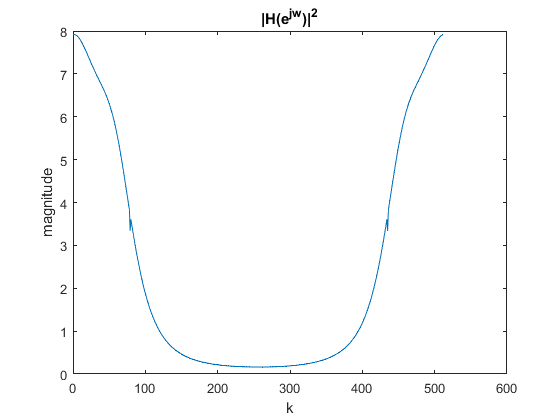
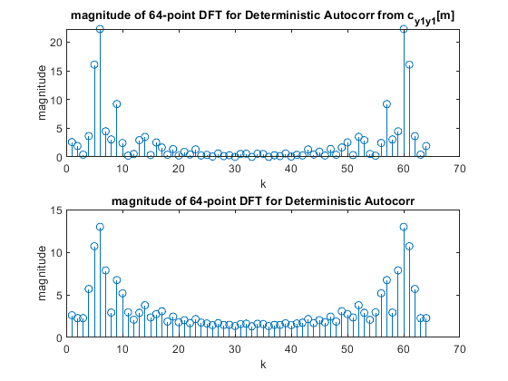
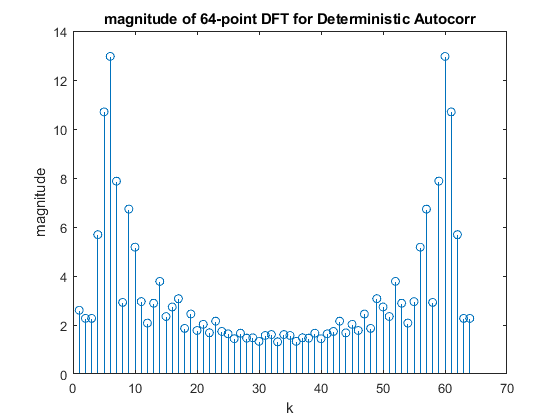
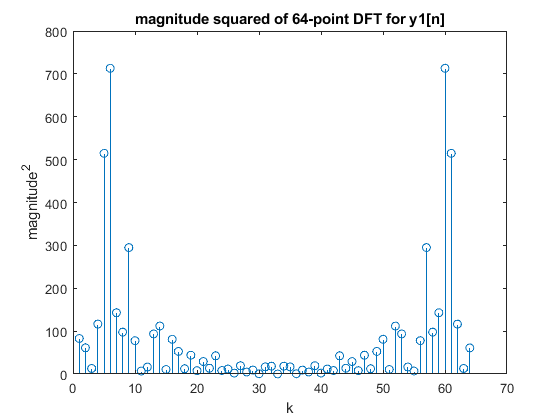

Contents
Heading
html = true;
clc;
close all;
load pj2data.mat
Preliminary Plotting
Q = 32;
figure;
plot(1:512, y)
title('y[n]')
xlabel('n')
figure;
plot(1:512, Hejw2)
title('|H(e^{jw})|^2')
ylabel('magnitude')
xlabel('k')

A. Autocorrelation and MATLAB
A.1
if(html == true)
close all;
end
figure;
y1_n = y(1:Q);
plot(xcorr(y1_n, y1_n,'biased'))
title('autocorr')
y1_negative_n = fliplr(y1_n);
figure;
plot(conv(y1_negative_n, y1_n))
title('alternative autocorr')
A.2
(a)
(b)
if(html == true)
close all;
end
figure;
cy1_y1 = xcorr(y1_n,y1_n,'biased') * Q;
y_ = fft(cy1_y1,64);
mag = abs(y_);
phse = unwrap(angle(y_));
stem(1:64,mag)
title('magnitude of 64-point DFT')
xlabel('k')
ylabel('magnitude')
figure;
figure;
stem(1:64, phse)
title('phase of 64-point dft')
xlabel('k')
ylabel('phase')
(c)
if(html == true)
close all;
end
deterministic_autocorr_1 = (1/Q) * cy1_y1;
deterministic_autocorr_2 = xcorr(y1_n,y1_n,'biased');
y1 = fft(deterministic_autocorr_1,64);
mag1 = abs(y1);
phse1 = unwrap(angle(y1));
y2 = fft(deterministic_autocorr_2,64);
mag2 = abs(y2);
phse2 = unwrap(angle(y2));
subplot(2,2,1);
stem(1:64,mag1)
title('magnitude of 64-point DFT for Deterministic Autocorr from cy1_y2[m]')
xlabel('k')
ylabel('magnitude')
subplot(2,2,2);
stem(1:64,mag2)
title('magnitude of 64-point DFT for Deterministic Autocorr')
xlabel('k')
ylabel('magnitude')
subplot(2,2,3);
stem(1:64,phse1)
title('phase of 64-point DFT for Deterministic Autocorr from c_{y1y2}[m]')
xlabel('k')
ylabel('phase')
subplot(2,2,4);
stem(1:64,phse2)
title('phase of 64-point DFT for Deterministic Autocorr')
xlabel('k')
ylabel('phase')

A.3
(a)
if(html == true)
close all;
end
figure;
stem(1:64,mag2)
title('magnitude of 64-point DFT for Deterministic Autocorr')
xlabel('k')
ylabel('magnitude')

(b)
if(html == true)
close all;
end
y1_n_fft = fft(y1_n,64);
disp(size(y1_n_fft))
mag_squared_32 = abs(y1_n_fft).^2;
figure;
stem(1:64,mag_squared_32)
title('magnitude squared of 64-point DFT for y1[n]')
xlabel('k')
ylabel('magnitude^2')
1 64

(c)
if(html == true)
close all;
end
y_n_fft = fft(y (1:64), 64);
mag_squared_64 = abs(y_n_fft).^2;
figure;
stem(1:64,mag_squared_64)
title('magnitude squared of 64-point DFT for y[n]')
xlabel('k')
ylabel('magnitude^2')
freqresp = downsample(Hejw2,8);
B.1
if(html == true)
close all;
end
err = plot_against_ideal(freqresp,mag2,"Ideal PDS vs. Estimate Using DFT of \phi_{y1y1}");
B.2
if(html == true)
close all;
end
fft_deterministic_autocorr_all = fft(y,1024);
y_k_squared = abs(fft_deterministic_autocorr_all).^2;
autocorr_estimate = (1/512)*y_k_squared;
err_trunc = plot_against_ideal(freqresp, downsample(autocorr_estimate,16), "Ideal PDS vs. Estimate Using DFT of \phi_{yy} w/ Downsampling to 64");
B.3
if(html == true)
close all;
end
periodogram = periodogram_averaging(y, 64);
averaging_err = plot_against_ideal(freqresp, periodogram, "Ideal PDS vs. Periodogram Averaging Estimate");
B.4
if(html == true)
close all;
end
autocorr_estimate = xcorr(y,y,'biased');
centered_31 = autocorr_estimate((512-15):(512+15));
padded_seq = cat(2,centered_31, zeros(1, 64-31));
fft_padded_seq = abs(fft(padded_seq, 64));
indirect_blackman_tukey_err = plot_against_ideal(freqresp, fft_padded_seq, "Ideal PDS vs. Indirect Blackman-Tukey Estimate");
B.5
if(html == true)
close all;
end
disp("Table of Errors for Different Estimators of PDS")
Errors = [err;err_trunc; averaging_err; indirect_blackman_tukey_err];
Estimators = [ "Estimate Using DFT of \phi_{y1y1}" ; "Estimate Using DFT of \phi_{yy} w/ Truncation at 64" ; "Periodogram Averaging Estimate" ; "Blackman-Tukey Estimate"];
table(Estimators, Errors)
Table of Errors for Different Estimators of PDS
ans =
4×2 table
Estimators Errors
_____________________________________________________ ______
"Estimate Using DFT of \phi_{y1y1}" 15.578
"Estimate Using DFT of \phi_{yy} w/ Truncation at 64" 12.07
"Periodogram Averaging Estimate" 1.3021
"Blackman-Tukey Estimate" 1.1467
(a)
(b)
(c)
if(html == true)
close all;
end
figure;
triangular_windowed_centered_31 = (triang(31).').*centered_31;
padded_seq = cat(2,triangular_windowed_centered_31, zeros(1, 64-31));
fft_padded_seq = abs(fft(padded_seq,64));
blackman_tukey_traingular_err = plot_against_ideal(freqresp, fft_padded_seq, "Ideal PDS vs. Indirect Blackman-Tukey Estimate (Triangular)");
disp("Indirect Blackman-Tukey Error w/ Triangular Window : " + num2str(blackman_tukey_traingular_err))
Indirect Blackman-Tukey Error w/ Triangular Window : 0.27002
Comments